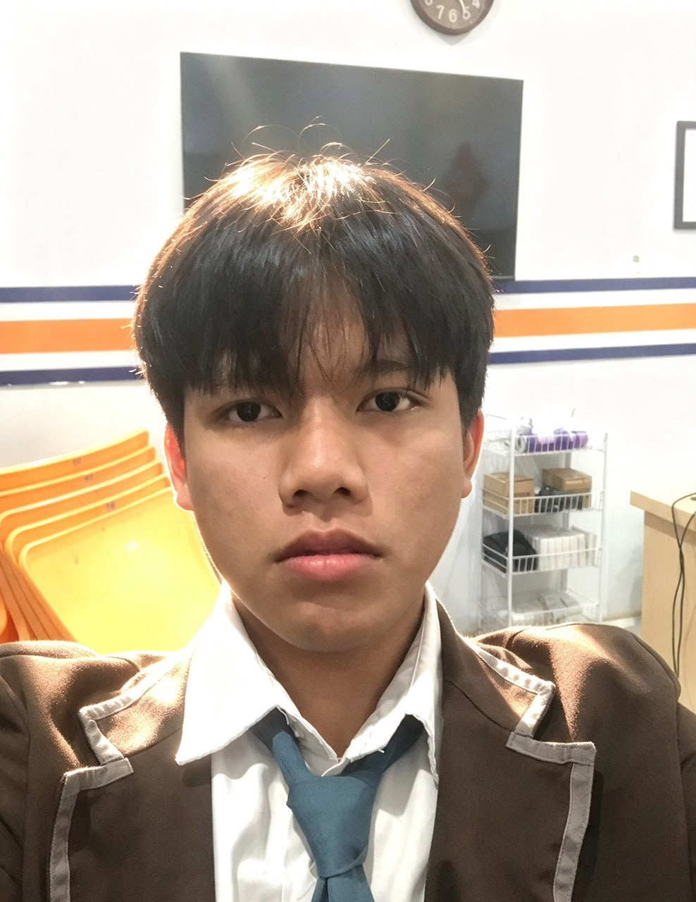

Portofolio pribadi © 2025 — siswa SMK kelas 12
This Is Zaki.
Saat ini saya sedang belajar membangun, mengembangkan, menghubungkan, dan menjalankan website. Saat ini saya sedang belajar website — dari tampilan paling depan sampai bagian belakangnya.
Saya sedang menempuh jalan menuju full-stack development. Cara belajar saya sederhana: pelajari, praktikkan, perbaiki, ulangi — sampai sebuah website benar-benar berjalan di internet.
01 / Tentang saya
Belajar dengan cara melakukannya.
Saya Zaki, siswa SMK kelas 12 yang tengah mendalami pemrograman dan teknologi digital. Rasa penasaran saya berkumpul di satu pertanyaan: bagaimana sebuah ide berubah menjadi website yang benar-benar berjalan?
Saya tidak mengklaim sudah jauh — jalannya masih panjang. Tapi setiap tahap mengajarkan hal yang sama: teori cepat terlupa, sementara yang pernah saya kerjakan sendiri akan menempel lama. Karena itu saya memilih belajar sambil membangun.
Setelah lulus, saya berencana melanjutkan pendidikan tinggi dan membangun karier sebagai full-stack developer — orang yang mengurus website dari tampilan paling depan hingga server di belakangnya.
02 / Keahlian yang saya pelajari
- 01HTML · CSS · JavaScriptBahasa dasar web — struktur, tampilan, dan interaksi
- 02Responsive Web DesignHalaman yang tetap nyaman di ponsel maupun desktop
- 03Antarmuka WebsiteMenyusun halaman agar jelas arahnya dan enak dipakai
- 04API & Integrasi DatabaseMenghubungkan website dengan data dan layanan lain
- 05AuthenticationSistem masuk pengguna — dipraktikkan lewat Firebase Authentication
- 06Firebase & MySQLDua lingkungan kerja data yang saya gunakan saat magang
- 07DNS · IP · DeploymentDari pengaturan domain sampai website aktif secara online
Saya sengaja tidak memasang bar atau persentase “tingkat keahlian” — semacam itu mudah ditulis, sulit dibuktikan. Cukup begini: semua di atas pernah saya pelajari atau praktikkan, dan daftarnya akan terus bertambah.
03 / Laporan magang
Ketika teori akhirnya disuruh bekerja.
Magang di PT Ascon Inovasi Data adalah bagian paling berkesan dari perjalanan belajar saya. Di sini saya tidak hanya membaca tutorial — saya terlibat langsung dalam pembuatan dan pengembangan website untuk situs oasse.id: dari urusan DNS dan IP, pekerjaan dengan data, sampai menjalankan situs secara online.
Klik baris untuk membaca catatan saya →
Belajar, mencoba, lalu mencatat.
Foto dan cerita singkat dari pengalaman yang membentuk perjalanan saya.
Dokumentasi akan tampil di sini.
Di luar kode, ada yang sedang saya jajaki.
Bagian ini saya tulis apa adanya: semuanya adalah minat yang sedang saya kembangkan, bukan keahlian yang sudah teruji. Saya menikmati proses menjajakinya — pelan-pelan, tanpa berpura-pura.
-
Penasaran bagaimana sebuah karya bisa sampai dikenal dan dipercaya orang. Untuk sekarang, saya mulai dari memperhatikan dan mencatat.
-
Ingin melatih keberanian menjelaskan sesuatu secara langsung di depan orang.
-
Tertarik menyusun cerita dari potongan klip. Masih tahap mencoba — alat andalan belum saya tetapkan.
-
Sedang belajar bahwa tampilan yang rapi itu membantu orang memahami — bukan sekadar mempercantik.
-
Ingin bisa membuat konten yang jujur, sederhana, dan benar-benar berguna bagi orang yang menontonnya.
Ketuk untuk membaca →
Ke mana saya hendak pergi.
-
01
Sedang berjalan
Menyelesaikan kelas 12 SMK sambil terus membangun dan memperbaiki kemampuan web saya.
-
02
Langkah berikutnya
Melanjutkan pendidikan tinggi untuk memperdalam pemrograman dan pengembangan web.
-
03
Arah panjang
Menjadi full-stack developer yang mampu mengurus produk dari tampilan paling depan sampai server di belakangnya — dan tumbuh bersama tim yang baik.
“Belum bisa” bukan alasan untuk berhenti — hanya penanda bahwa ada materi berikutnya yang sedang menunggu.
Mari terhubung.
Untuk diskusi, kesempatan belajar, undangan kolaborasi, atau sekadar berkenalan — saya senang menerima pesan. Silakan pilih jalur yang paling nyaman.